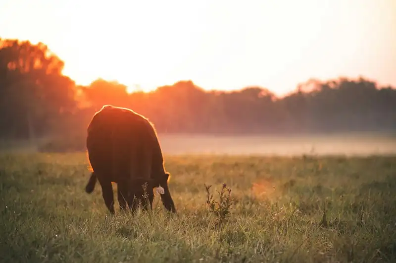
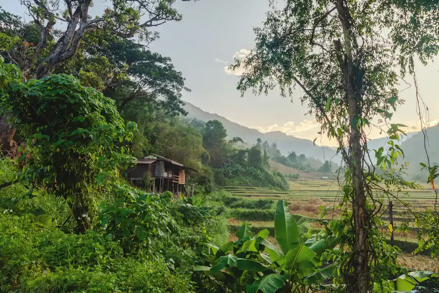
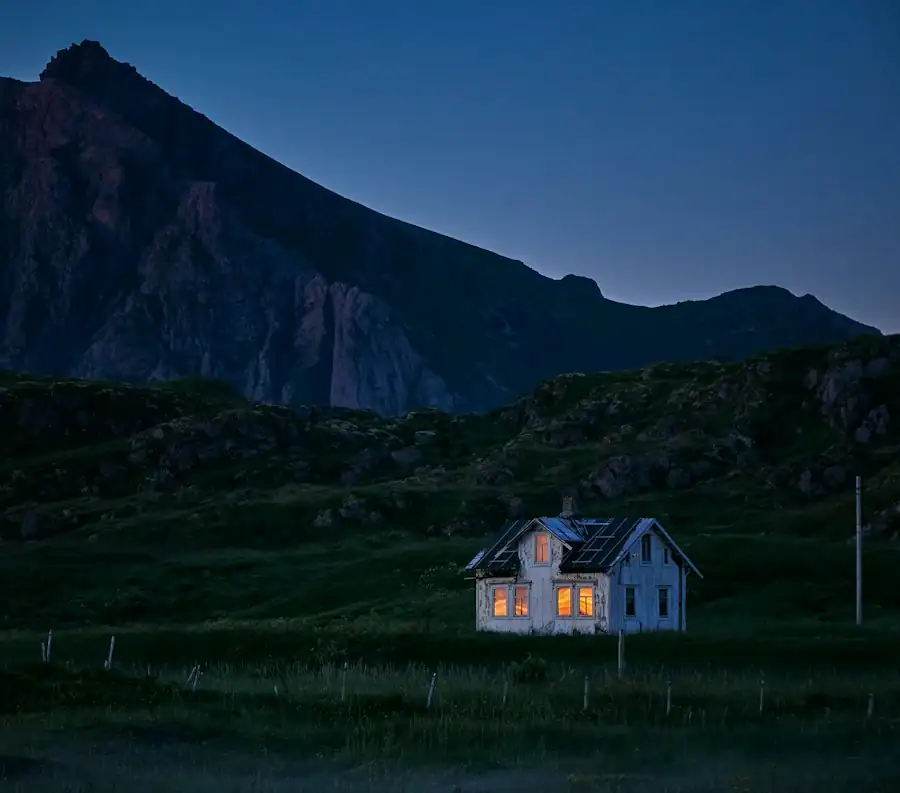
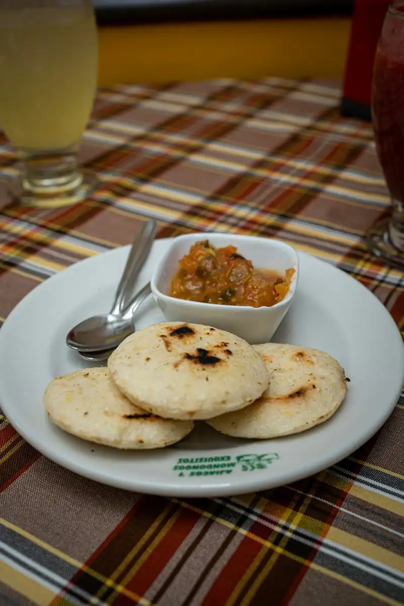
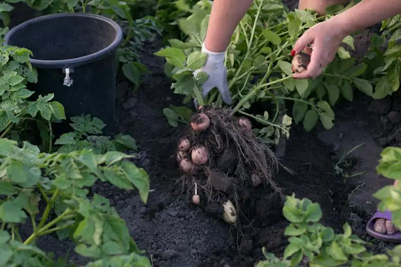
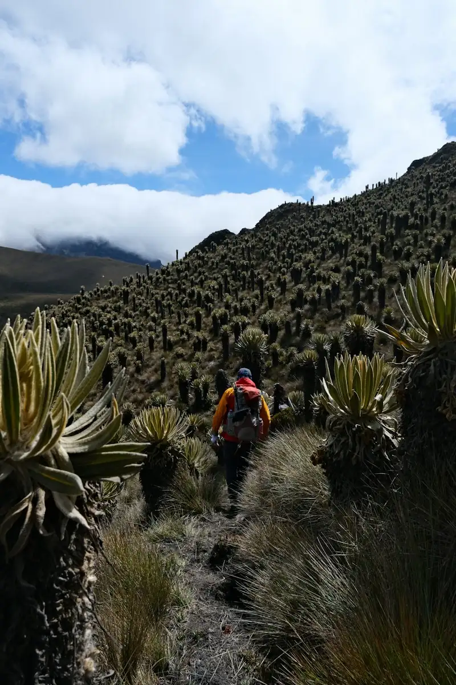
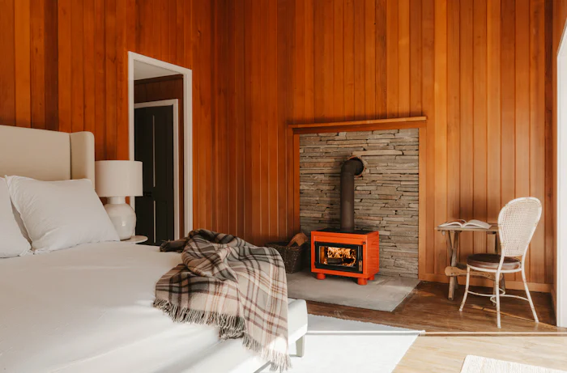
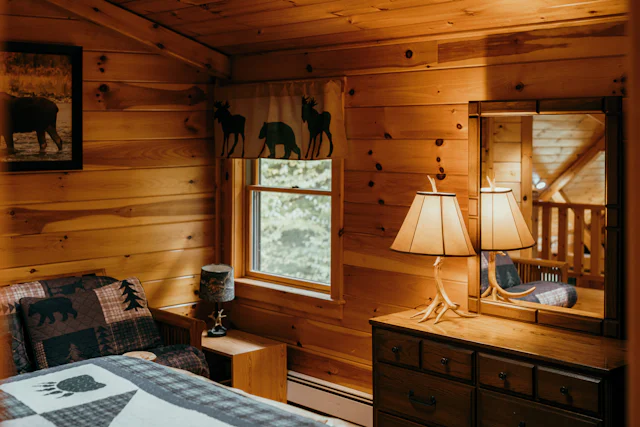
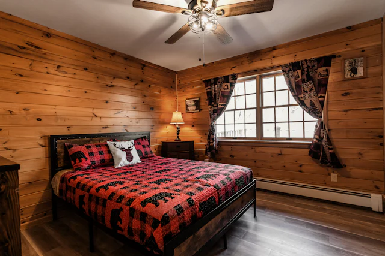
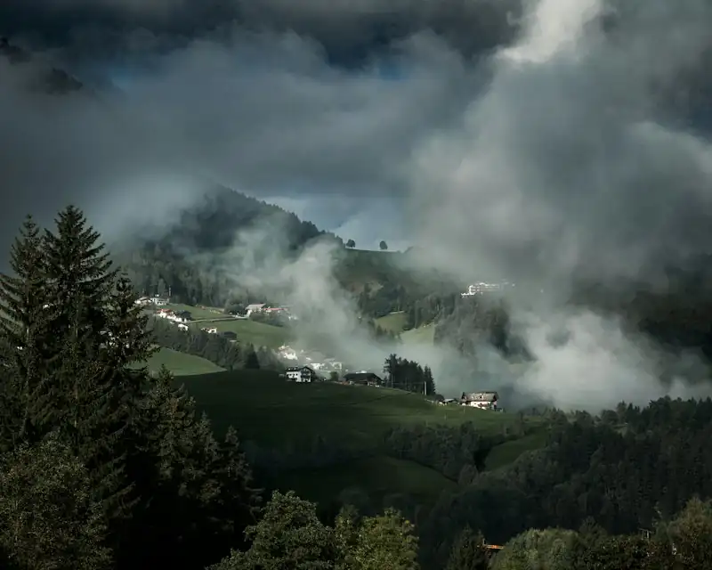

Un día en el refugio · 1 de 5
6:30a. m.
Ordeño y café recién colado
Acompaña el ordeño cuando sale el sol y tómate la leche tibia con café.


Desde Santo Domingo, Mérida
Posada agroturística en Santo Domingo. Un refugio de familia para vivir el campo andino de cerca, sin apuro.
5,0 en GoogleExperiencias del campo
Aquí no se viene solo a dormir. Baja y vive el día completo, del ordeño a la chimenea. Marca lo que te provoque.

Un día en el refugio · 1 de 5
6:30a. m.
Acompaña el ordeño cuando sale el sol y tómate la leche tibia con café.

Un día en el refugio · 2 de 5
8:00a. m.
Arepas de trigo, pisca andina y queso hecho en casa, en la mesa de la familia.

Un día en el refugio · 3 de 5
10:00a. m.
Siembra, cosecha y saca tus propias papas. Aquí se aprende cómo se cultiva en la montaña.

Un día en el refugio · 4 de 5
3:00p. m.
Senderos entre potreros, quebradas y frailejones, con alguien de la casa.
Un día en el refugio · 5 de 5
7:00p. m.
Chocolate caliente, cuentos y la chimenea encendida. Afuera hace frío; adentro no.
¿Qué te provoca? Marca Me interesa en lo que quieras vivir.
Preguntar por WhatsApp5,0
en Google. La primera reseña ya llegó con cinco estrellas. Ver la ficha
Habitaciones
Madera, cobijas de lana y agua caliente. Cada botón te abre WhatsApp con la habitación ya escrita.

$65la noche
Hasta 5 personas · 2 camas matrimoniales y 1 individual
Chimenea · Baño privado con agua caliente · Cocinita · Vista a la montaña
Reservar
$30la noche
Hasta 2 personas · 1 cama matrimonial
Baño privado con agua caliente · Cobijas de lana
Reservar
$40la noche
Hasta 3 personas · 1 cama matrimonial y 1 individual
Baño privado con agua caliente · Ventana a la huerta
ReservarDesliza para ver las 3 habitaciones →

Santo Domingo y cómo llegar
2.173 msobre el nivel del mar
Un pueblo de montaña andino: aire frío, verde por todos lados y gente que te saluda en la calle.
La dirección
Calle Bolívar con calle SucreDesde Mérida.Unas 2 horas y media por la carretera Trasandina.
Desde Barinas.Cerca de 2 horas subiendo hacia la montaña.
Antes de venir
La entrada es desde las 2:00 p. m. y la salida hasta las 12:00 m.
El ordeño, el desayuno y la huerta están incluidos. La caminata y la noche de fogón se coordinan al llegar.
Sí. El campo es para ellos: animales, huerta y espacio para correr.
En la noche refresca bastante. Trae abrigo, gorro y medias gruesas; las cobijas de lana las ponemos nosotros.
Pago móvil, Zelle o efectivo en divisas.
Sí. Con el 50 % apartamos tus fechas y el resto lo pagas al llegar.
¿Otra duda? Pregúntanos por WhatsApp